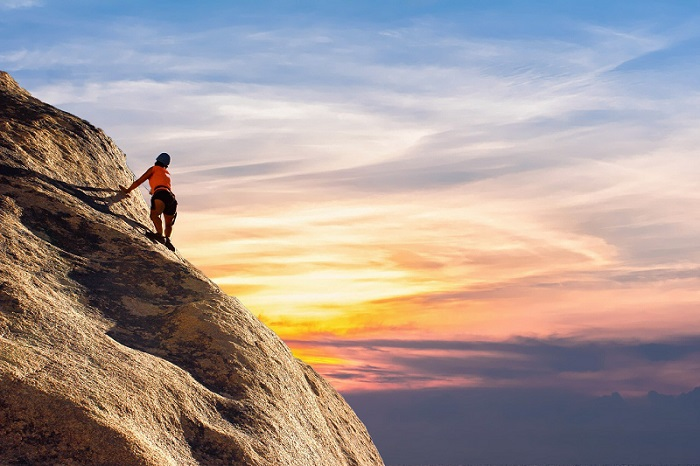

Kayaking is a fun activity that involves moving through water in a small water vessel with the aid of a double-bladed paddle. It allows the boat driver to maneuver
through waterways by sitting face-forward and propelling ahead with alternating side-to-side paddle strokes. The paddler sits in the cockpit with the legs extended
beneath a closed deck, leaving the upper body free and exposed.
The kayak has been around for centuries. Its easy access and basic functionalities have made it the burgeoning recreational activity known around the world today. This is
also what made me pick it up as a hobby about 7 years ago. Moreover, it has enabled me to capture some immensely picturesque views.

Mountaineering is the sport of climbing mountains -- it's all about challenge and perseverance, putting hands and feet on rocks, ice, and snow, and finally reaching a summit.
There, high above the world of cities and civilization, the climber can pause and look out over a world ruled by nature and her raw beauty. Mountaineering
is not only climbing mountains the hard way with an ice axe, crampons, cams, and rope, but it is also simply challenging and difficult hiking up steep rocky slopes, talus fields,
and along airy ridges studded with outcroppings in the high mountains.
The reason I began engaging in this activity was peer pressure, because all of my friends were really into it and wanted me to experience how spectaucular an adventure reaching a
summit it. In addition to that, some much needed physical training on my side was in order and I began preparing regularly.